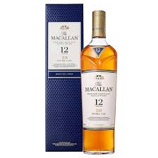

Fundación Gil y Gil
Recaudamos fondos para el cloro de la psicina de nuestro amado lider
Necesitamos dineros para las bebeidas alcoholicas que mantienen con vida a nuetro amado lider, siempre de primeras marcas
Animate a colaborar con la causa, seras recompensando con un bañador borat con la cara del amado lider
Formas de colaboración
- Donar dinero
- Traer garrafas de cloro
- Donar botellas de buen mandangon, vino de la Riberea del Duero o Whisky de calidad
| Presupuesto estimado del vino |
|
| Vinito |
Cantidad necesaria: 100 |
Precio aproximado: 100 |
| Presupuesto estimado del Whisky |
 |
| Whisky |
Cantidad necesaria: 500 pesetas |
Precio aproximado: 500 pesetas |